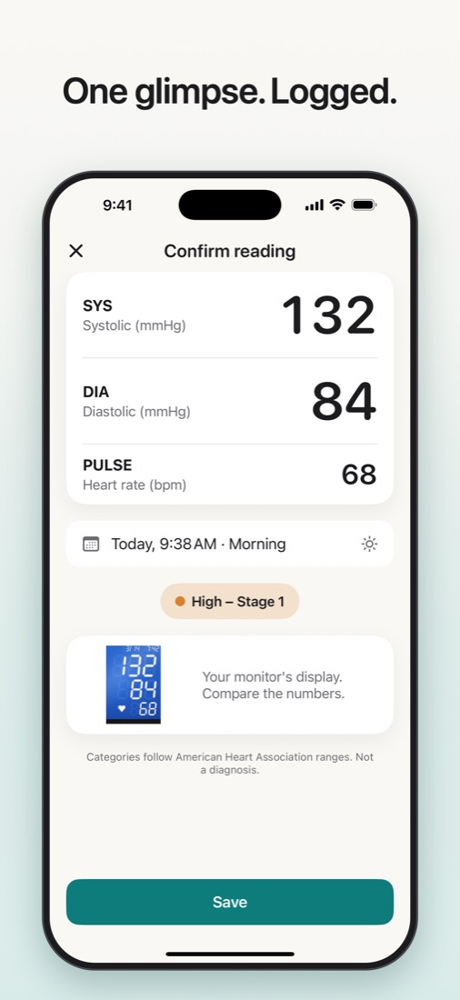
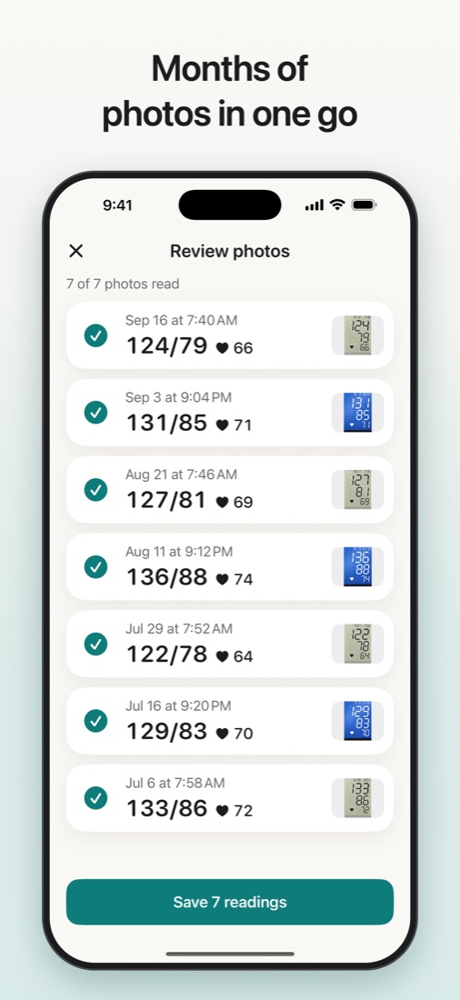
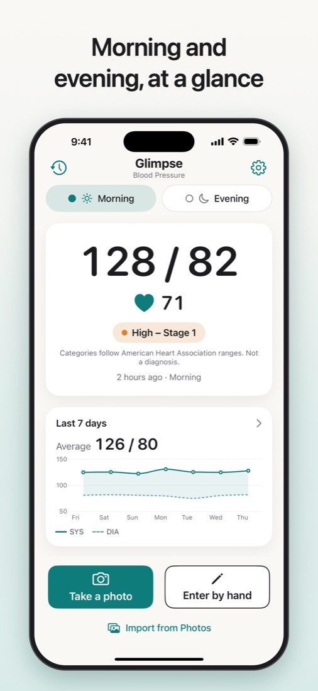
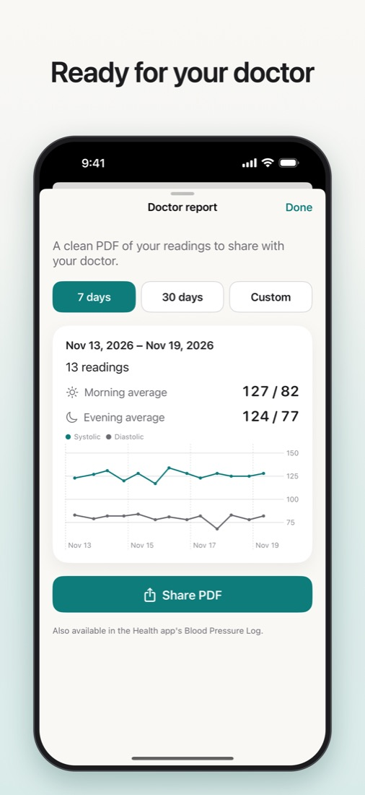
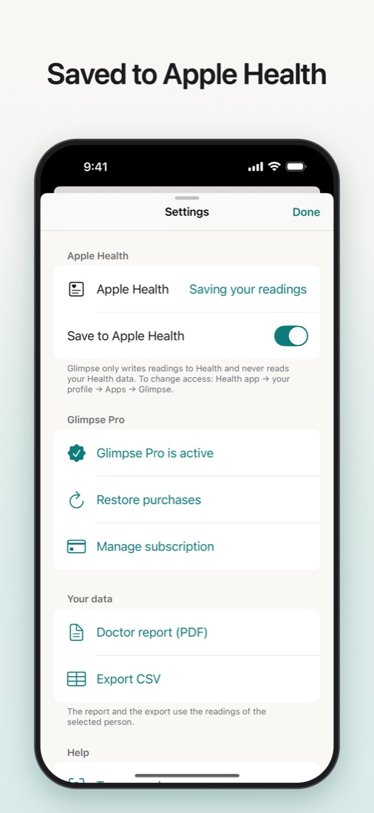

Your blood pressure, logged in a glimpse.
Take a photo of your home blood pressure monitor. Glimpse reads the numbers, saves them and keeps your morning and evening averages – ready for your next doctor's visit.
How it works
- Snap – photograph the monitor's display, or import photos you already took. Glimpse reads systolic, diastolic and pulse on your iPhone.
- Check – numbers Glimpse is unsure about are shown in amber. Tap a number to correct it, then save.
- Share – see your trend and averages, create a PDF report for your doctor, and save readings to Apple Health if you like.





Private by design
Glimpse works offline – reading, logging and reports need no internet connection (only buying or restoring Glimpse Pro does). Photos are read on your iPhone and never stored or uploaded. No account, no ads, no tracking.
Glimpse does not measure blood pressure and is not a medical device. It logs the readings of your own monitor. Talk to your doctor about your values.